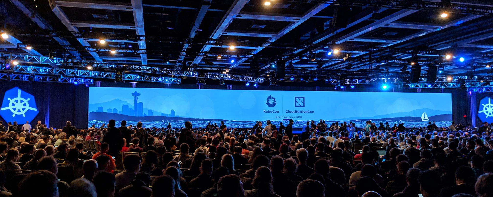

Dec 30, 2018
I had the absolute pleasure of attending KubeCon & CloudNativeCon from 10th - 13th December. With a grand total of 8000 attendees, 150+ speakers, 250+ talks, 100+ sponsors and more swag than I've ever seen at a conference, this was an event not to be missed.
It took me a good few hours to read through the schedule and decide which talks I wanted to attend, but luckily I had a lot of time to pass on the 10-hour flight from London. However, this turned out to be an extremely difficult task as there were a lot of overlapping talks I was interested in. This led to me having to make some sacrifices, but thankfully the majority of talks were recorded.
I could spend hours talking about the experience as a whole, but I wanted to outline my top 3 take aways:
A service mesh is a dedicated infrastructure layer for making service-to-service communication safe, fast, and reliable.A service mesh is a dedicated infrastructure layer for making service-to-service communication safe, fast, and reliable.
https://blog.buoyant.io/2017/04/25/whats-a-service-mesh-and-why-do-i-need-one
I've been experimenting with service meshes, mainly Linkerd, for around 12 months and they've proved to be a key tool in my infrastructure arsenal. One of the most useful features is the network proxy. By proxying all of your traffic through a service mesh, it becomes extremely easy to gather important metrics such as latency, success and failure rates, status codes, connection errors, etc. This can help when investigating network bottlenecks and calculating scaling metrics.
One of the main talking points at the conference was Envoy Proxy, a recently graduated CNCF project developed by the folks at Lyft. I'd heard about Envoy before, but got the chance to see it up close and personal for the first time. It provides Advanced Load Balancing and Observability among several other features such as HTTP/2 and gRPC support.
Constance Caramanolis from Lyft gave a great talk on Reducing Mean-Time-to-Detection of Incidents with an Envoy Service Mesh.
A common practice in cloud computing, especially Kubernetes, is autoscaling services based on important metrics such as CPU and memory utilisation. This is the standard behaviour for most scaling applications, but it's not always the most reliable.
Latency is one of the most important metrics you should be collecting - if you're not already! Database lookups, data processing, DNS queries, queue backups, etc. can all have a significant effect on request and response timings. Your service might have a small footprint, however, it could severely underperform due to latency throughout the network.
Thomas Rampelberg from Bouyant spoke in detail about how to Scale Your Service on What Matters: Autoscaling on Latency.
Instrumenting services isn't a new concept, but there are a lot of great open-source metrics platforms embracing Kubernetes and dedicating work to provide detailed deployment methods. InfluxDB, Prometheus and Grafana are just a handful of OSS that have recently released operators, documentation and apps that enable these services to be easily configured to run on Kubernetes.
Instrumentation should be a first-class citizen for any service running in a standalone or distributed environment. Metrics are just as important as logs - if not more. Using them together can help diagnose problems exponentially, especially when tracing distributed systems or monitoring usage.
Rob Szumski & Chance Zibolski from Red Hat gave a demo on Collecting Operational Metrics for a Cluster with 5,000 Namespaces.
To say I had an incredible time would be a huge understatement. I feel very privileged to work alongside all of the great engineers from around the world. The community is growing rapidly and there are a ton of exciting open-source projects being created to help us accelerate in the world of cloud computing.
And to top things off, Seattle is now my favourite city and Washington has become one of my favourite states. I'll be back next year, for sure!